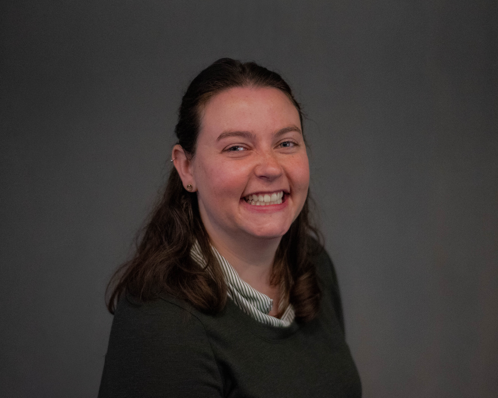

Margot Accettura
Information Literacy Open Access
STEM Librarian Villanova University

About
My name is Margot and I am the STEM Librarian at Villanova University I am the liaison to seven departments in the College of Liberal Arts and Sciences. These departments are Astrophysics and Planetary Science, Biology, Chemistry and Biochemistry, Computing Sciences, Geography and the Environment, Mathematics and Statistics, and Physics. I maintain collections for each unique department and help with research needs including conducting information literacy sessions in classrooms.
Prior to joining Falvey Library, I earned my bachelor’s degree in Physics at Skidmore College, then went on to earn my master’s degree in Imaging Science at the Rochester Institute of Technology. My passion for library science came from working in the bibliographic services department at Skidmore’s Lucy Scribner Library during my undergraduate career. This led me to transition to library science through coursework and as a circulation assistant at the Phoenixville Public Library, while simultaneously working in the STEM industry.
Instruction
A major part of my role is conducting information literacy sessions for undergraduate and graduate students. In this section, I will expand on some concepts I am able to cover in a range of times.
- Introduction to the scholarly conversation
- Finding and evaluating resources
- Citation management
- Generative AI in database eearching